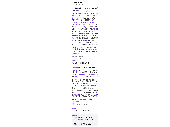
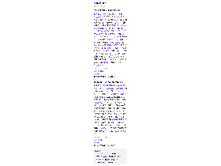
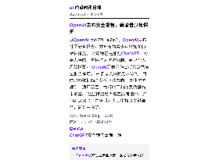
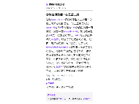
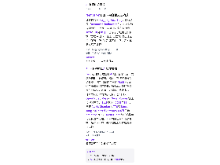
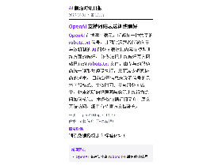

每天高频班次的 AI 领域要闻速览：发生了什么，为什么重要。

缩略图加载失败，点此查看海报
缩略图加载失败，点此查看海报
缩略图加载失败，点此查看海报
缩略图加载失败，点此查看海报
缩略图加载失败，点此查看海报
缩略图加载失败，点此查看海报该条目来自 Hugging Face Blog，仅有标题“nemotron-halloween”，正文与简介均为空。 页面元数据标注发布时间为2026年10月30日，但没有可核验的事件、数字或技术细节。 因此无法判断是否涉及模型发布、功能更新或其他内容，需补充原文后再处理。
依据：订阅简介（原文未读取） · 原文不可用：缺少可信单篇文章元数据或标题，未把列表当正文；仅依据订阅简介，信息可能不完整
Hugging Face Blog01:57原文链接 ↗
Zest 近日推出短信内 AI 餐厅管家，用户发送短信即可获得餐厅推荐、查询空位并预订餐桌。 该功能调用用户经 Plaid 导入的信用卡餐饮消费记录，结合本人及朋友偏好生成建议，还可加入群聊、综合多人口味并发起投票后直接订位。 预订通过 OpenTable、Resy 和 SevenRooms 等连接服务完成。 Zest 成立于2024年11月，曾获 Alexis Ohanian 的776和 Steve Jang 的Kindred Ventures 180万美元 pre-seed 投资。 TechCrunch 测试称推荐与订位基本可用，但公司目前用户规模为数千名早期用户，并计划把服务扩展到餐厅以外。
依据：可提取原文正文 · 可提取正文；不含交互图表、图片或付费隐藏内容
TechCrunch AI01:47原文链接 ↗
谷歌Suncatcher项目的原型太空数据中心已上线并与地面通信。 该卫星本月初随SpaceX猎鹰9号火箭与100多艘航天器一同发射，搭载一颗Google TPU，发电功率最高1千瓦；但受功耗限制，TPU每次只能开机约20分钟，增加了天地通信的难度。 地面工程师本周发出首个提示，让预装的DeepMind Gemma 4模型写一首关于太空的俳句，谷歌称卫星目前运行正常。 后续测试将考察芯片在热应力和空间辐射下的表现；地面实验显示，辐射对推理负载影响较小，对训练影响更大。 若验证可行，谷歌计划2027年再发射两颗搭载该芯片的卫星，支持更高功率和星间光链路。
依据：可提取原文正文 · 可提取正文；不含交互图表、图片或付费隐藏内容
TechCrunch AI01:00原文链接 ↗
Theranos吹哨人泰勒·舒尔茨在接受《旧金山标准报》采访时警告，AI热潮给行骗者提供了「绝佳机会」。 Theranos巅峰估值约100亿美元，但其血液检测设备从未真正可靠运转，只有少数检测使用自有机器，其余外包给第三方设备，错误结果流入了沃尔格林门店的真实患者。 舒尔茨认为，投资人凭30分钟咖啡就投出10万美元的做法应当结束，而霍尔姆斯把这套模式放大到1亿美元规模。 他指出AI的尽职调查尤其困难，很难分辨真正原创的技术与套壳ChatGPT的产品。 霍尔姆斯目前因11年以上刑期在联邦监狱服刑，同时与伴侣经营诊断公司Haemanthus，据报道已融资约2000万美元。
依据：可提取原文正文 · 可提取正文；不含交互图表、图片或付费隐藏内容
TechCrunch AI00:03原文链接 ↗
10月30日智元创新日上，联合创始人彭志辉发布物理AI新单位Worken，定义为「活跃机器人数量×自主工作时长×产出效能比」，试图用工时衡量机器人创造的实际价值。 模型方面，具身基座模型GO-3 Preview在RoboDojo、RoboTwin、RoboColiseum三项评测登顶；交互大模型WITA-OMNI在Daily-Omni等四项评测居首，平均响应约600毫秒、最快约400毫秒，可识别100多种语言，无需唤醒词。 硬件上，第三代架构AHA3用单颗SoC统一调度三类智能，称体积缩小50%、响应速度提升90%；新本体精灵G2 Max单臂负载20公斤、双臂峰值负载50公斤。 灵渠OS 1.0称在1000Hz任务下时延抖动小于4微秒，年底全面开源并捐赠给开放原子开源基金会。 已披露场景包括龙旗3C产线稳定运行超7个月、6天作业64824次、成功率99.99%，以及爱仕达门店100台导购3天带动销售223万元。
依据：可提取原文正文 · 可提取正文；不含交互图表、图片或付费隐藏内容
量子位20:58原文链接 ↗
10月30日，面壁智能的算子生成系统ForgeKernel进行了一场22.5小时直播：在没有源码、也未参考DeepSeek原始实现的情况下，仅依据算子的数学定义和目标硬件约束，在英伟达B200上把DeepSeek-V4.1的FlashMLA Prefill算子做到472微秒，比FlashMLA的518微秒快9.8%。 全程42轮迭代、留下32个版本，消耗1张B200共22个GPU小时，人类写入的代码为0行；首版耗时1834微秒，不到4小时压到593微秒，降幅约67.6%。 此前在昇腾CANNBench的950DT、950PR、A3三张榜单上，ForgeKernel均排名第一，A3榜总分4341.16、基准加速比1.898倍。 团队称同一套方法从英伟达迁移到昇腾只需更换性能分析工具，新芯片所需硬件知识由模型边测边积累。 直播结束后，智能进化实验室联合OpenBMB社区宣布开源ForgeKernel。
依据：可提取原文正文 · 可提取正文；不含交互图表、图片或付费隐藏内容
量子位19:05原文链接 ↗
10月30日，联想天禧AI 4.5在AIPC端正式发布，此前已于10月20日、10月27日先后上线AI手机端与AI平板端，实现PC、平板、手机多端覆盖。 此次升级以「我的职场超能搭档」为定位，主推超全能办公、超高效会议、超省心差旅三大场景：新的「超能模式」打通飞书、联想浏览器、企业微信等连接器，可按一句话指令跨应用拆解并执行任务；AI妙记支持会中实时转录、以第三方视角参与讨论，知识库单次上传文件数量扩至20个。 交互上三端支持全双工语音，用户可随时打断、补充指令；手机与平板可远程调用AIPC超能模式接力执行重任务。 联想AI主机P7同步升级，可按任务复杂度在云端大模型与本地模型间自动切换。 上述功能描述与数据均来自联想方面发布，实际体验尚待用户验证。
依据：可提取原文正文 · 可提取正文；不含交互图表、图片或付费隐藏内容
量子位18:44原文链接 ↗
OpenAI 在博客中表示，将遵从一种共享的 robots.txt 信号，让网站运营者能够向参与该机制的 AI 服务商表达其内容在模型训练方面的偏好。 该做法把训练偏好写入网站已有的 robots.txt 文件，由参与的服务商统一读取并遵照执行，从而减少逐家协商的成本。 目前公开信息未说明信号的具体字段格式、生效时间、参与服务商名单，也未说明偏好声明与实际训练行为之间如何核验。 本条仅依据订阅简介，原文无法访问，细节有待官方文档补充。
依据：订阅简介（原文未读取） · 原文不可用：原文HTTP 403；仅依据订阅简介，信息可能不完整
OpenAI Blog17:30原文链接 ↗
据OpenAI博客的订阅简介，OpenAI发布社区安全报告，并宣布为青少年增加新的保护措施。 公司称正在加强ChatGPT中的暴力预防，包括扩大防护机制、更早介入风险情形。 OpenAI还表示作出新的公共安全报告承诺。 由于原文页面无法访问，目前只能依据简介获悉上述方向，具体防护规则、适用范围、执行时间和效果数据均未披露。 这些措施是否覆盖所有用户、如何判定风险、是否引入人工审核等关键细节，简介未说明。
依据：订阅简介（原文未读取） · 原文不可用：原文HTTP 403；仅依据订阅简介，信息可能不完整
OpenAI Blog17:00原文链接 ↗
10月30日，百度APP在北京举行产品升级沟通会，宣布搜索实现「递归自我进化」，并升级搜索AI API，活动期间最低价4.9元/千次查询，称低于DeepSeek搜索API。 百度称搜索正从「一次提问、一次回答」转向「一项任务、一份交付」，可对复杂问题做多步查找与整理，目前覆盖170余种工具场景，并给出择校比较、行程规划等示例。 其他升级包括：AI镜头支持多目标同步识别、动态追踪与9种方言实时对话；搜索页GUI场景覆盖提升5倍，接入政务、民生、央行等超50亿权威资源数据，覆盖20多个行业；推出AI互动剧与AI互动应用。 百度将性价比归因于内容、引擎、架构、应用四层AI原生架构，称在线反馈闭环使迭代效率提升80%以上。 上述价格与效果数据均来自百度方面披露。
依据：可提取原文正文 · 可提取正文；不含交互图表、图片或付费隐藏内容
量子位16:50原文链接 ↗
据量子位转载的Utopai Studios供稿，这家成立4年的AI原生影视公司于2026年10月完成6000万美元融资，Dealroom、The Information等媒体报道其估值站上10亿美元，并称已获得下一轮20亿至30亿美元区间的投资意向。 公司基于MiniMax H3定制视频模型Utopai X，在Artificial Analysis的文生视频与图生视频盲评榜中均列全球第二；配套自研制片智能系统PAI，用于拆解剧本、规划镜头并接入既有后期流程。 公司称自己是首家同时加入好莱坞编剧协会与演员工会的AI影视公司，剧集《Space Nation》已按非AI内容的市场价格向巴西Globoplay与德国电视台售出发行权，《福布斯》报道其与《科尔特斯》潜在合计预售收入最高可达1.1亿美元。 2027年公司计划有三部院线片上映。 以上估值、合作与收入预期均来自公司及媒体披露，尚未经票房验证。
依据：可提取原文正文 · 可提取正文；不含交互图表、图片或付费隐藏内容
量子位16:12原文链接 ↗